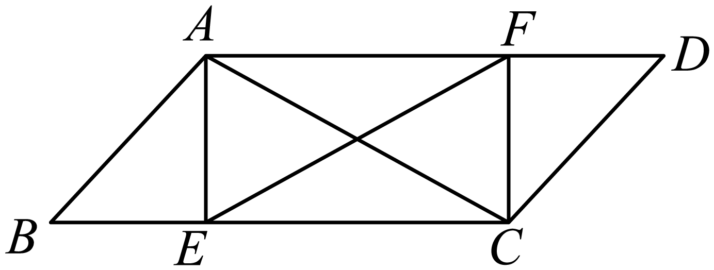

<!doctype html><html lang="zh"><meta charset="utf-8"><title>2023年北京中考数学 第20题</title><style>body{margin:0;color:#17202a;background:#fff;font-family:"SimSun","Times New Roman",serif}
article{box-sizing:border-box;width:1000px;padding:24px;font-size:24px;line-height:1.65}
p{margin:8px 0;overflow-wrap:anywhere}img{vertical-align:middle;max-width:100%;height:auto}
table{border-collapse:collapse;width:100%;margin:12px 0;table-layout:fixed}td{border:1px solid #777;padding:6px;overflow-wrap:anywhere}td p{margin:2px 0}
h1{font: bold 24px "Microsoft YaHei";color:#0f766e} .tab{display:inline-block;width:24px}
.emphasis{text-emphasis:dot;text-emphasis-position:under} math{font-size:1.05em}</style><article><h1>2023年北京中考数学 第20题</h1><p>20. 如图，在中，点E，F分别在，上，，．</p><p>  </p><p>（1）求证：四边形是矩形；</p><p>（2），，，求的长．</p></article></html>